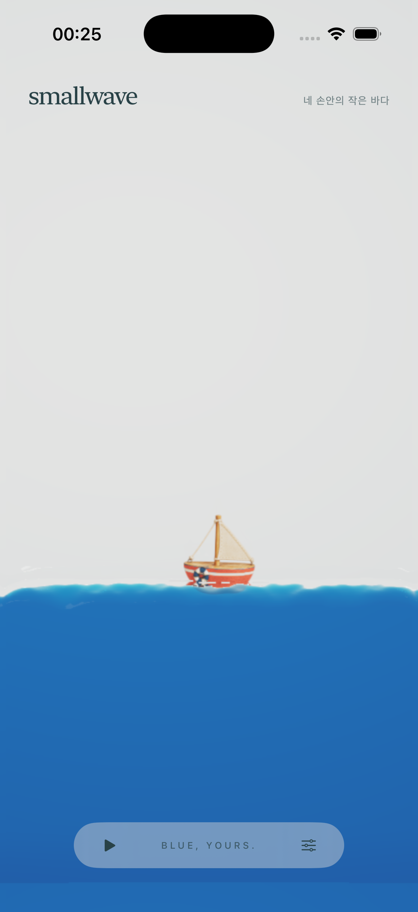
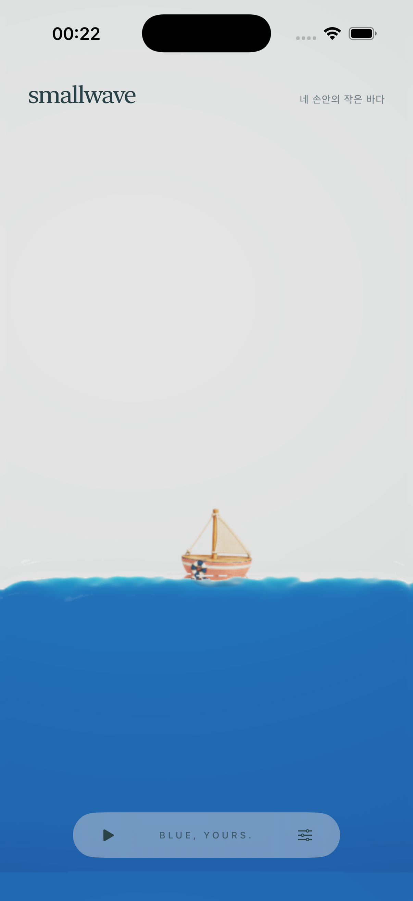

<!doctype html>
<html lang="ko">
<meta charset="utf-8"><meta name="viewport" content="width=device-width,initial-scale=1">
<title>smallwave — 네 가지 빨강</title>
<style>
*{box-sizing:border-box}body{margin:0;background:#f5f2eb;color:#294247;font:14px/1.7 -apple-system,BlinkMacSystemFont,"Apple SD Gothic Neo",sans-serif}main{max-width:844px;margin:auto;padding:24px 20px;display:grid;grid-template-columns:300px 402px;gap:60px;align-items:start}aside{padding-top:26px}.eyebrow{font-size:10px;letter-spacing:.14em;color:#63746e}h1{font:400 30px/1.4 Georgia,"AppleMyungjo",serif;letter-spacing:-.8px;margin:16px 0}p{margin:12px 0}.subtle{color:#63746e;font-size:12px}.colors{display:grid;gap:7px;margin:24px 0 16px}button{font:inherit;color:inherit;cursor:pointer}button:focus-visible,a:focus-visible,summary:focus-visible{outline:3px solid #947340;outline-offset:4px}.choice{display:flex;align-items:center;gap:12px;min-height:60px;text-align:left;background:transparent;border:1px solid #cbd0c6;border-radius:8px;padding:10px 12px}.choice[aria-pressed="true"]{border-color:#294247;background:#e7ebe3;box-shadow:inset 0 0 0 1px #294247}.swatch{width:28px;height:28px;border-radius:50%;flex:none;background:var(--paint);box-shadow:inset 0 0 0 1px #00000012}.choice strong{display:block;font-size:13px;font-weight:550;line-height:1.3}.choice small{display:block;font-size:11px;color:#63746e;margin-top:3px}.choice .check{margin-left:auto;opacity:0}.choice[aria-pressed="true"] .check{opacity:1}.current{width:100%;display:flex;align-items:center;gap:10px;text-align:left;background:none;border:0;border-bottom:1px solid #d5d9d0;padding:12px 0;margin:0 0 20px;font-size:12px}.current .swatch{width:16px;height:16px}.current[aria-pressed="true"]{font-weight:700}.mode{background:none;border:1px solid #aebbb0;border-radius:7px;min-height:44px;padding:10px 14px}.mode[aria-pressed="true"]{background:#294247;color:#fff}.viewmodes{display:flex;gap:8px;margin:20px 0}figure{margin:0;width:402px;max-width:100%}.phone{width:100%;aspect-ratio:402/874;overflow:hidden;border-radius:30px;background:#dfe3e2;box-shadow:0 0 0 1px #cbd1c9}.phone img{display:block;width:100%;height:100%;object-fit:contain}figcaption{font-size:11px;color:#63746e;margin:10px 0}figcaption strong{color:#294247;font-size:13px;font-weight:550;display:block}.note{min-height:52px;font-size:13px}.poses{display:flex;flex-wrap:wrap;gap:5px}.poses button{font-size:11px;min-height:36px;padding:7px 10px;border:1px solid #bdc8bb;border-radius:6px;background:none}.poses button[aria-pressed="true"]{background:#294247;color:#fff}details{border-top:1px solid #d5d9d0;margin-top:22px;padding-top:8px;font-size:12px;color:#63746e}summary{cursor:pointer;padding:9px 0}a{color:inherit}.gallery{display:none}.all{display:block;max-width:892px}.all aside{padding-top:0}.all h1{font-size:26px}.all aside>.colors,.all aside>.current,.all aside>.note,.all aside>details,.all aside>.recommendation,.all .single{display:none}.all .gallery{display:grid;grid-template-columns:402px 402px;gap:32px 28px}.all aside>p{max-width:640px}.all .viewmodes{margin:16px 0 24px}.recommendation{font-size:12px;margin:20px 0 0;padding:14px 0;border-top:1px solid #d5d9d0}.recommendation strong{font-weight:600}.sources{font-size:11px;margin-top:24px}.sources a{margin-right:10px}
@media(max-width:780px){main,.all{display:flex;flex-direction:column;align-items:center;gap:22px;padding:18px 0;max-width:100%}aside{width:min(100%,450px);padding:0 22px}h1{font-size:26px}.colors{grid-template-columns:1fr 1fr;gap:7px;margin-top:18px}.choice{padding:9px;gap:8px}.choice small{font-size:10px}.swatch{width:22px;height:22px}.check{display:none}.phone{border-radius:0}figure{max-width:100vw}figcaption{padding:0 16px}.all aside{padding:0 22px}.all .gallery{display:flex;flex-direction:column;gap:24px;align-items:center;width:100%}.all .gallery figure{width:min(402px,100vw)}}
</style>
<main id="layout">
<aside><div class="eyebrow">SMALLWAVE / RED COLORWAYS</div><h1>같은 배,<br>네 가지 빨강</h1><p>돛과 나무, 구명환은 그대로.<br>파란 바다 안에서 선체의 빨강만 비교해 봐.</p>
<div class="colors" aria-label="선체 색상 비교">
<button class="choice" data-color="tomato" aria-pressed="false" style="--paint:#D44C38"><span class="swatch" aria-hidden="true"></span><span><strong>Tomato red</strong><small>선명하고 따뜻한 토마토빛</small></span><span class="check" aria-hidden="true">✓</span></button>
<button class="choice" data-color="coral" aria-pressed="true" style="--paint:#CD6258"><span class="swatch" aria-hidden="true"></span><span><strong>Muted coral red</strong><small>부드러운 산호빛 빨강</small></span><span class="check" aria-hidden="true">✓</span></button>
<button class="choice" data-color="sunfaded" aria-pressed="false" style="--paint:#D3755E"><span class="swatch" aria-hidden="true"></span><span><strong>Sun-faded red</strong><small>햇빛에 살짝 바랜 빨강</small></span><span class="check" aria-hidden="true">✓</span></button>
<button class="choice" data-color="brick" aria-pressed="false" style="--paint:#B95243"><span class="swatch" aria-hidden="true"></span><span><strong>Soft brick red</strong><small>한 톤 낮춘 붉은 벽돌빛</small></span><span class="check" aria-hidden="true">✓</span></button>
</div>
<button class="current" data-color="current" aria-pressed="false" style="--paint:#C23C2B"><span class="swatch" aria-hidden="true"></span>지금 앱의 빨강과 비교</button>
<p class="note" id="note">뮤트 코랄 · 부드러움과 따뜻한 존재감을 함께 보는 방향.</p>
<p class="recommendation"><strong>내 추천은 Muted coral.</strong><br>부드러움과 빨간 배의 존재감이 균형을 이뤄. 더 또렷하고 발랄한 인상이 좋으면 Tomato가 좋아.</p>
<div class="viewmodes"><button class="mode" id="single-mode" aria-pressed="true">한 화면에서 색 바꾸기</button><button class="mode" id="all-mode" aria-pressed="false">4색 나란히</button></div>
<p class="subtle">402 × 874pt 실제 앱 캡처. 작은 화면에서는 폭에 맞춰 보여줘.</p>
<details><summary>수면에 닿는 색도 비교하기</summary><p>같은 물리 상태로 출력한 자세별 Metal 장면이야.</p><div class="poses" aria-label="자세별 비교"><button data-pose="native" aria-pressed="true">전체 앱</button><button data-pose="rest" aria-pressed="false">잔잔할 때</button><button data-pose="tilt" aria-pressed="false">기울일 때</button><button data-pose="shake" aria-pressed="false">흔들 때</button><button data-pose="inverted" aria-pressed="false">뒤집었을 때</button><button data-pose="flat" aria-pressed="false">눕혔을 때</button></div></details>
<p class="sources"><a href="README.md">비교 기준</a><a href="palette.json">색상 값</a></p>
</aside>
<figure class="single"><div class="phone"></div><figcaption id="caption" role="status">Muted coral red · 실제 앱 전체 화면</figcaption></figure>
<div class="gallery" aria-label="동일한 크기로 보는 네 가지 빨강">
<figure><div class="phone"></div><figcaption><strong>01 · Tomato red</strong>선명하고 따뜻한 토마토빛</figcaption></figure>
<figure><div class="phone"></div><figcaption><strong>02 · Muted coral red</strong>부드러운 산호빛 빨강</figcaption></figure>
<figure><div class="phone"></div><figcaption><strong>03 · Sun-faded red</strong>햇빛에 살짝 바랜 빨강</figcaption></figure>
<figure><div class="phone"></div><figcaption><strong>04 · Soft brick red</strong>한 톤 낮춘 붉은 벽돌빛</figcaption></figure>
</div></main>
<script>
const colors={tomato:{title:'Tomato red',note:'토마토 레드 · 파란 물 위에서 작고 또렷하게 읽히는 방향.'},coral:{title:'Muted coral red',note:'뮤트 코랄 · 부드러움과 따뜻한 존재감을 함께 보는 방향.'},sunfaded:{title:'Slightly sun-faded red',note:'살짝 바랜 레드 · 물빛과 어우러지는 밝고 여린 방향.'},brick:{title:'Soft brick red',note:'소프트 브릭 · 선체의 무게감과 차분함을 보는 방향.'},current:{title:'Current red',note:'현재 빨강 · 색을 고르기 전 앱의 기본색은 그대로 유지했어.'}};
const poses={native:'실제 앱 전체 화면',rest:'잔잔할 때',tilt:'기울일 때',shake:'흔들 때',inverted:'뒤집었을 때',flat:'눕혔을 때'};let color='coral',pose='native';
function show(){const scene=document.querySelector('#scene');scene.src=pose==='native'?`native-${color}.png`:`${color}-${pose}.png`;scene.alt=`${colors[color].title} · ${poses[pose]} · smallwave의 작은 둥근 배`;document.querySelector('#caption').textContent=`${colors[color].title} · ${poses[pose]}`;document.querySelector('#note').textContent=colors[color].note;}
document.querySelectorAll('[data-color]').forEach(b=>b.addEventListener('click',()=>{color=b.dataset.color;document.querySelectorAll('[data-color]').forEach(x=>x.setAttribute('aria-pressed',String(x===b)));show();}));
document.querySelectorAll('[data-pose]').forEach(b=>b.addEventListener('click',()=>{pose=b.dataset.pose;document.querySelectorAll('[data-pose]').forEach(x=>x.setAttribute('aria-pressed',String(x===b)));show();}));
function mode(all){document.querySelector('#layout').classList.toggle('all',all);document.querySelector('#single-mode').setAttribute('aria-pressed',String(!all));document.querySelector('#all-mode').setAttribute('aria-pressed',String(all));}
document.querySelector('#single-mode').addEventListener('click',()=>mode(false));document.querySelector('#all-mode').addEventListener('click',()=>mode(true));
</script>
</html>
